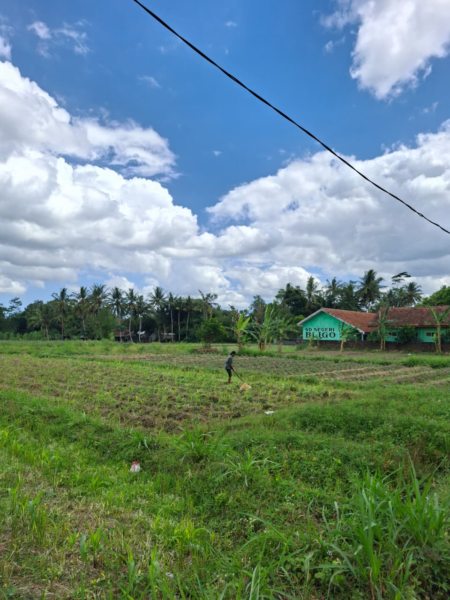

Potensi Dusun

Dusun Curah Kidul memiliki berbagai potensi yang menjadi kekuatan dalam mendukung pembangunan dan meningkatkan kesejahteraan masyarakat. Potensi tersebut meliputi sektor pertanian, sumber daya manusia, serta lingkungan yang memiliki peluang untuk terus dikembangkan secara berkelanjutan. Sektor pertanian memberikan kontribusi terhadap pemenuhan kebutuhan ekonomi masyarakat melalui pemanfaatan lahan yang tersedia. Sumber daya manusia mendukung pengembangan dusun melalui partisipasi aktif masyarakat dalam berbagai kegiatan sosial, ekonomi, dan kemasyarakatan. Potensi lingkungan menjadi aset yang perlu dijaga dan dikelola secara bijaksana untuk menciptakan lingkungan yang bersih, nyaman, dan berkelanjutan. Pemanfaatan seluruh potensi tersebut diharapkan mampu mendorong kemajuan Dusun Curah Kidul serta meningkatkan kualitas hidup masyarakat secara berkelanjutan.
Sektor pertanian merupakan salah satu potensi utama yang dimiliki oleh Dusun Curah Kidul. Sebagian besar masyarakat menjadikan sektor pertanian sebagai sumber mata pencaharian utama dalam memenuhi kebutuhan ekonomi keluarga. Kondisi lahan yang mendukung serta pengalaman masyarakat dalam mengelola lahan menjadikan sektor pertanian sebagai penopang aktivitas ekonomi di dusun. Potensi tersebut memberikan kontribusi terhadap peningkatan kesejahteraan masyarakat dan memiliki peluang untuk terus dikembangkan secara berkelanjutan.
Pemanfaatan Lahan
Masyarakat memanfaatkan lahan pertanian sesuai dengan kondisi wilayah, karakteristik tanah, dan musim tanam yang berlaku. Pemanfaatan lahan tersebut mendukung peningkatan produktivitas pertanian sekaligus menjaga keberlanjutan pemanfaatan sumber daya lahan.
Mata Pencaharian
Sebagian besar masyarakat menggantungkan penghasilan keluarga pada kegiatan pertanian. Hasil pertanian memberikan manfaat ekonomi melalui pemenuhan kebutuhan rumah tangga serta menjadi sumber pendapatan bagi masyarakat.
Peran Pertanian
Sektor pertanian memberikan kontribusi terhadap pertumbuhan ekonomi masyarakat di Dusun Curah Kidul. Keberadaan sektor tersebut juga mendukung ketahanan ekonomi masyarakat serta menjadi potensi yang terus dipertahankan dan dikembangkan.
Sumber daya manusia merupakan salah satu potensi yang dimiliki oleh Dusun Curah Kidul. Masyarakat berperan aktif dalam berbagai kegiatan kemasyarakatan yang diselenggarakan di lingkungan dusun. Keikutsertaan masyarakat dalam kegiatan tersebut menunjukkan adanya kepedulian, kebersamaan, dan semangat gotong royong yang masih terjaga hingga saat ini.
Gotong Royong
Masyarakat melaksanakan kegiatan kerja bakti secara rutin untuk menjaga kebersihan dan kenyamanan lingkungan. Kegiatan tersebut juga memperkuat rasa kebersamaan dan tanggung jawab dalam menjaga lingkungan dusun.
Kegiatan Kemasyarakatan
Masyarakat berpartisipasi dalam berbagai kegiatan sosial dan keagamaan yang dilaksanakan secara rutin. Kegiatan tersebut mempererat hubungan antarwarga sekaligus memperkuat kehidupan sosial di Dusun Curah Kidul.
Partisispasi Masyarakat
Masyarakat mengikuti berbagai kegiatan, seperti pertemuan RT, PKK, Karang Taruna, dan Posyandu. Kegiatan tersebut menjadi wadah bagi masyarakat untuk mempererat hubungan antarwarga serta meningkatkan kerja sama dalam kehidupan bermasyarakat.
Lingkungan merupakan salah satu potensi yang dimiliki oleh Dusun Curah Kidul dalam mendukung kehidupan masyarakat. Kondisi lingkungan yang bersih, asri, dan nyaman menciptakan suasana yang mendukung berbagai aktivitas sehari-hari. Masyarakat juga memiliki kepedulian yang tinggi terhadap kebersihan dan kelestarian lingkungan melalui berbagai kegiatan yang dilakukan secara bersama-sama. Upaya tersebut menjadi salah satu bentuk partisipasi masyarakat dalam menciptakan lingkungan yang sehat dan nyaman.
Kondisi Lingkungan
Dusun Curah Kidul memiliki lingkungan yang bersih, asri, dan tertata sehingga memberikan kenyamanan bagi masyarakat dalam menjalankan aktivitas sehari-hari. Kondisi tersebut tetap terjaga berkat peran aktif masyarakat dalam menjaga kebersihan lingkungan.
Kepedulian Lingkungan
Masyarakat melaksanakan kegiatan kerja bakti secara berkala untuk menjaga kebersihan dan keindahan lingkungan dusun. Kegiatan tersebut juga memperkuat kerja sama antarwarga dalam menciptakan lingkungan yang sehat dan nyaman.
Fasilitas Umum
Dusun Curah Kidul memiliki berbagai fasilitas umum, seperti mushola, taman kanak-kanak (TK), taman pendidikan Al-Qur'an (TPA), lapangan, dan pos ronda. Keberadaan fasilitas tersebut mendukung kegiatan keagamaan, pendidikan, sosial, dan kemasyarakatan yang dilaksanakan oleh masyarakat.